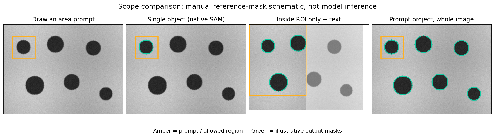

Seg scope: ROI, whole image and single object#
Mode = Segment determines that input is a model prompt. Scope then chooses how to interpret an area prompt and where outputs may appear. Choose Rectangle, Circle, Ellipse or Polygon to expose the three prompted choices below. Point switches to whole-image examples and hides ROI/single-object choices; this is why the dropdown can look different after changing tools.


Manual reference-mask schematic on synthetic data. Green outlines explain scope behavior; they are not measured predictions or a quality comparison.
1. Inside ROI only#
Purpose: permit output only inside a region, including exact polygon or ellipse boundaries. It does not by itself specify which objects to find.
Open an image, select a receiving Group and load a compatible model.
Set Mode → Segment and choose an area tool.
Set Scope → Inside ROI only and draw the allowed output region.
To find multiple particles with a text-capable model, enter
black dotsor another effective phrase, then Run text segmentation.Inspect clipped boundaries and partial objects at the ROI edge. Accept masks commits them; Cancel / clear discards the preview.
With empty text, the area supplies a native box/object prompt and the app clips that result. It does not automatically search for every object inside the ROI. With text, the model/detector finds candidates and the app clips them to the region. The model may still use whole-image context: ROI does not promise faster inference or a model trained only on cropped pixels.
Application filtering also protects already accepted objects. If nothing new appears, check the accepted-object state before lowering thresholds. To change an accepted object, use its explicit refinement action.
2. Prompt project, whole image#
Purpose: describe a target concept using examples or text, then look beyond the original example shape across the current image.
Choose this scope and clear an old ROI/exact-region selection if needed.
For text-only search, enter the phrase and run it. You can also select existing foreground area objects with Select/Objects and use Run preview: when no new point/shape examples are pending, their exact masks supply positive examples.
For native SAM3.1 visual search, clear text for the first comparison, select Positive example, and tightly draw one representative particle.
Add representative positive/negative shapes and inspect each preview.
Accept the reviewed masks into the chosen Group.
A rectangle in this scope is an example, not a clipping boundary. Changing the shape-polarity selector changes the next area example; left/right clicks set positive/negative point polarity independently. SAM1/2 use an application retrieval layer; native SAM3/3.1 use concept prompts. See model families and SAM3.1 examples.
SAM3 ONNX supports text-only whole-image search. Its shape polarity is disabled; clear old examples/points rather than expect them to affect the export.
3. Single object (native SAM)#
Purpose: segment the object described by one area-derived prompt without searching the whole image for similar objects, and without exact ROI clipping.
Select a native SAM family and an area tool.
Choose Single object (native SAM).
Clear the text field and draw tightly around one object.
Run/review the predicted mask. It can extend outside the drawn area because the area supplies a bounding box, not an exact clipping mask.
Accept the result, or redraw the prompt and review again.
Leaving text present selects the text path, which can return multiple masks; this is not a reliable one-object recipe. For guaranteed output clipping use Inside ROI only. For replacement of one existing accepted object, choose Refine selected object explicitly rather than ordinary new-object inference.
SAM3 ONNX hides Single object because this export has no native instance-prompt path. The underlying SAM3.1 API supports point refinement, but the current GUI Point tool deliberately uses the whole-image example workflow.
4. Automatic grid, unannotated only#
This is an additional candidate-generation operation, separate from the three prompted meanings above. It samples native positive points over unprotected pixels, ignores text, and filters the resulting masks. Selecting this scope can start the run immediately when the model is ready.
Use Options… → Grid points per side, minimum score/area and maximum objects. CPU starts with a small grid; larger grids can be expensive. Grid density does not alter a native SAM3.1 text request. SAM3 ONNX hides this unsupported operation.
Invert a selected region#
Select area objects and use Edit → Invert region or Ctrl+I. Their complement becomes an exact pixel region. This differs from selecting all unselected object rows: the inverse can include background between objects.
Exact regions act as hard output limits, even when a whole-image scope label was previously selected. Empty inverse regions produce a visible error. Use Create object from region in Manual/Edit to save the exact region as an annotation. Read ROI and aliases for persistent behavior.
Quick comparison#
Scope |
Area means |
Exact clipping? |
Typical result |
|---|---|---|---|
Inside ROI only |
Allowed output region; also a box prompt when text is absent |
Yes |
Native object or text candidates clipped to region |
Prompt project, whole image |
Positive/negative example |
No, except an explicit exact region |
Similar objects or text matches across image |
Single object (native SAM), text empty |
One native object box prompt |
No |
One mask, possibly extending beyond prompt |
Automatic grid |
Point-sampling operation |
Protected/exact regions still apply |
Filtered candidates; ignores text |
Every path ends at preview → review → Accept masks. The score is not a calibrated microscopy probability, and an empty preview is not proof of a successful detector.